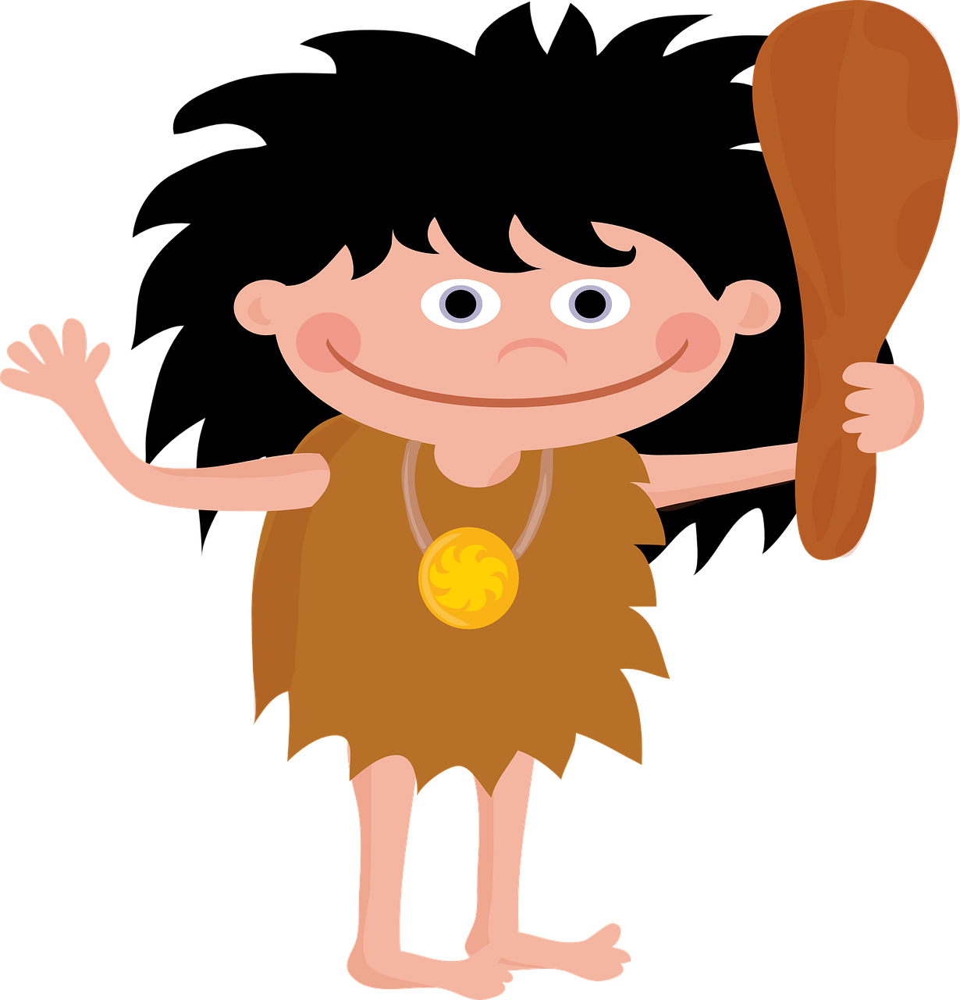

Estoy encantado de poder presentarme. Soy Rocky, el niño de la prehistoria. 
Pixabay. Rocky2
Os preguntaréis por qué estoy aquí y qué voy a contaros o enseñaros, ¿verdad? Pues he venido porque quiero que conozcáis mi historia, de donde vengo y como vivo. Pero antes de empezar con esta bonita historia, necesito que TODOS y TODAS tengáis un documento, imprescindible, para poder recorrer el maravilloso mundo de la prehistoria. Si si, no estoy loco, necesito que todos construyáis vuestroPASAPORTE PREHISTÓRICO.
PASAPORTE PREHISTÓRICO
Creación pasaporte
45 min
Para crear este pasaporte históricos necesitaréis los siguientes materiales:
1. Folios blancos.
2. Goma-eva o cartulina para la portada.
3. Tijeras.
4. Pegamento o celo para unir las páginas del pasaporte.
5. Una foto de carnet.
Os preguntaréis por qué necesitáis este pasaporte para estudiar esta unidad didáctica. Pues muy sencillo.
El pasaporte está dividido en tres etapas: las tres etapas de la prehistoria, que son : PALEOLÍTICO, NEOLÍTICO y EDAD DE LOS METALES. Y también deberéis incluir una página para poner vuestros datos personales (como en el ejemplo de bajo)
(Yo sé que habéis sido muy buenos periodistas y que habéis entrevistado a alguna persona para preguntarle cosas de la prehistoria, y que en clase ya habéis estado viendo los nombres de estas etapas)
Lo que necesitáis es, hacer este pasaporte para ir completando cada etapa con los datos que hayáis aprendido en cada una de ellas.
Os dejo un ejemplo que hice con unos alumnos y alumnas en Londres. Mirad:
Siguiendo este ejemplo, y con la ayuda de vuestras familias, tendréis que traer este pasaporte el próximo día a clase.
Vamos pequeños viajeros, ¡a viajar por la prehistoria!
Una vez los alumnos/as tengan el pasaporte (el cual se revisará en clase para comprobar que está bien estructurado) se les explicará que esa va a ser una herramienta de trabajo y estudio, donde anotarán los datos más importantes de cada etapa, que se verán en clase y en las diferentes actividades, para poder organizar los conocimientos y facilitar su comprensión y estudio.